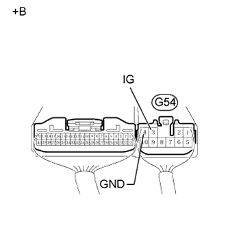
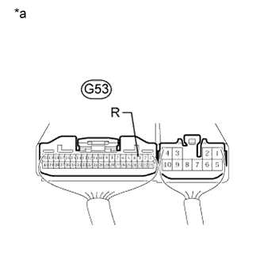
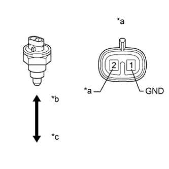

СИСТЕМА ДИФФЕРЕНЦИАЛОВ > ПРОВЕРКА |
| 1. ПРОВЕРЬТЕ СИСТЕМУ БЛОКИРОВКИ ДИФФЕРЕНЦИАЛА |
| *A | для моделей с щитком приборов с оригинальной системой подсветки "Optitron" | *B | для моделей с аналоговым щитком приборов |
| *C | Для моделей с правосторонним рулевым управлением 5AT | *D | Для моделей с левосторонним рулевым управлением 5AT |
Проверьте контрольную лампу.
Убедитесь, что после перевода замка зажигания в положение ON (ВКЛ) контрольная лампа загорается примерно на 1 с.
Проверьте действие блокировки дифференциала.
Поддомкратьте автомобиль и запустите двигатель.
Установите раздаточную коробку в положение L4 или L4L.
Убедитесь, что при установке переключателя управления блокировкой дифференциала в положение ON (ВКЛ) загорается контрольная лампа. При этом включается блокировка дифференциала для задних колес.
Убедитесь, что при установке переключателя управления блокировкой дифференциала в положение OFF (ВЫКЛ) контрольная лампа гаснет. При этом блокировка заднего дифференциала выключается.
Остановите двигатель и опустите автомобиль.
| 2. ПРОВЕРЬТЕ ЭБУ ПОЛНОГО ПРИВОДА (ПИТАНИЕ) |
|  |
Проверьте жгут проводов и разъем (ЭБУ – аккумуляторная батарея и масса).
Измерьте напряжение в соответствии со значениями, приведенными в таблице.
| Контакты для подключения диагностического прибора | Положение переключателя | Заданные условия |
| G54-3 (IG) - масса | Зажигание включено | 11 - 14 В |
| *a | Устройство с подсоединенным жгутом проводов (ЭБУ полного привода) |
Измерьте сопротивление в соответствии со значениями, приведенными в таблице ниже.
| Контакты для подключения диагностического прибора | Условие | Заданные условия |
| G54-4 (GND) - масса | Всегда | Менее 1 Ом |
| 3. ПРОВЕРЬТЕ ПЕРЕКЛЮЧАТЕЛЬ БЛОКИРОВКИ ДИФФЕРЕНЦИАЛА |
Проверьте жгут проводов и разъем (переключатель блокировки дифференциала – ЭБУ).
Отсоедините разъем G53 ЭБУ.
Отсоедините разъем выключателя G110.
Измерьте сопротивление в соответствии со значениями, приведенными в таблице ниже.
| *a | Вид спереди разъема со стороны жгута проводов: (к переключателю блокировки дифференциала) | *b | Вид спереди разъема со стороны жгута проводов: (к ЭБУ полного привода) |
| Контакты для подключения диагностического прибора | Условие | Заданные условия |
| G110-6 (B) - G53-3 (R) | Всегда | Менее 1 Ом |
| G110-3 (GND) - масса | Всегда | Менее 1 Ом |
| G110-3 (GND) - G53-3 (R) | Всегда | 100 кОм или более |
Проверьте переключатель блокировки дифференциала.
Выключите зажигание.
Подсоедините разъем G110 переключателя.
Подключите разъем G53 ЭБУ.
|  |
Измерьте сопротивление в соответствии со значениями, приведенными в таблице ниже.
| Контакты для подключения диагностического прибора | Положение переключателя | Заданные условия |
| G53-3 (R) - масса | Переключатель блокировки дифференциала во включенном положении | Ниже 1,5 В |
| Переключатель блокировки дифференциала в выключенном положении | 11–14 В |
| *a | Устройство с подсоединенным жгутом проводов (ЭБУ полного привода) |
| 4. ПРОВЕРЬТЕ ПРИВОД БЛОКИРОВКИ ЗАДНЕГО ДИФФЕРЕНЦИАЛА |
Проверьте жгут проводов и разъем (привод блокировки заднего дифференциала – ЭБУ).
Отсоедините разъем E1 привода блокировки заднего дифференциала.
Отсоедините разъемы ЭБУ G53 и G54.
Измерьте сопротивление в соответствии со значениями, приведенными в таблице ниже.
| *a | Вид спереди разъема со стороны жгута проводов: (к ЭБУ полного привода) | *b | Вид спереди разъема со стороны жгута проводов: (к приводу блокировки дифференциала) |
| Контакты для подключения диагностического прибора | Условие | Заданные условия |
| G53-10 (RLY2) - E1-5 (RLY2) | Всегда | Менее 1 Ом |
| G53-10 (RLY2) - масса | Всегда | 100 кОм или более |
| G53-9 (RLY1) - E1-6 (RLY1) | Всегда | Менее 1 Ом |
| G53-9 (RLY1) - масса | Всегда | 100 кОм или более |
| G54-5 (M2) - E1-2 (M2) | Всегда | Менее 1 Ом |
| G54-5 (M2) - масса | Всегда | 100 кОм или более |
| G54-1 (M1) - E1-3 (M1) | Всегда | Менее 1 Ом |
| G54-1 (M1) - масса | Всегда | 100 кОм или более |
| E1-4 (GND2) - масса | Всегда | Менее 1 Ом |
Проверьте переключение из свободного состояния в состояние блокировки.
Соедините цепи через реле, как показано на рисунке, и убедитесь, что вилка привода перемещается из положения разблокировки в положение блокировки.
| *1 | Реле DEF | - | - |
| *a | Вид спереди разъема со стороны жгута проводов: (к приводу блокировки дифференциала) | - | - |
После завершения переключения из свободного состояния в состояние блокировки проверьте концевой выключатель.
Измерьте сопротивление в соответствии со значениями, приведенными в таблице ниже.
| Контакты для подключения диагностического прибора | Условие | Заданные условия |
| 5 (RLY2) - 4 (GND) | После переключения из свободного состояния в состояние блокировки | Менее 12,5 Ом |
| 6 (RLY1) - 4 (GND) | После переключения из свободного состояния в состояние блокировки | 500 кОм или более |
Проверьте переключение из состояния блокировки в свободное состояние.
Соедините цепи через реле, как показано на рисунке, и убедитесь, что вилка привода перемещается из положения блокировки в положение разблокировки.
| *1 | Реле DEF | - | - |
| *a | Вид спереди разъема со стороны жгута проводов: (к приводу блокировки дифференциала) | - | - |
После завершения переключения из состояния блокировки в свободное состояние проверьте концевой выключатель.
Измерьте сопротивление в соответствии со значениями, приведенными в таблице ниже.
| Контакты для подключения диагностического прибора | Условие | Заданные условия |
| 5 (RLY2) - 4 (GND) | После переключения из состояния блокировки в свободное состояние | 500 кОм или более |
| 6 (RLY1) - 4 (GND) | После переключения из состояния блокировки в свободное состояние | Менее 12,5 Ом |
| 5. ПРОВЕРЬТЕ ДАТЧИК ПОЛОЖЕНИЯ БЛОКИРОВКИ ДИФФЕРЕНЦИАЛА |
Установите датчик положения блокировки заднего дифференциала.
Снимите датчик положения блокировки заднего дифференциала (Нажмите здесь).
|  |
Измерьте сопротивление в соответствии со значениями, приведенными в таблице ниже.
| Контакты для подключения диагностического прибора | Положение переключателя | Заданные условия |
| 2 (+B) - 1 (GND) | Нажат | Менее 1 Ом |
| Отпущен | 100 кОм или более |
| *a | Устройство с неподсоединенным жгутом проводов (датчик положения блокировки заднего дифференциала) |
| *b | Нажат |
| *c | Отпущен |
Проверьте жгут проводов и разъем (ЭБУ – датчик положения блокировки дифференциала).
Отсоедините разъем E2 датчика положения блокировки дифференциала.
Отсоедините разъем G53 ЭБУ.
Измерьте сопротивление в соответствии со значениями, приведенными в таблице ниже.
| *a | Устройство с неподсоединенным жгутом проводов (датчик положения блокировки заднего дифференциала) | *b | Устройство с неподсоединенным жгутом проводов (ЭБУ полного привода) |
| Контакты для подключения диагностического прибора | Условие | Заданные условия |
| G53-15 (RLP) - E2-2 (+B) | Всегда | Менее 1 Ом |
| G53-15 (RLP) - масса | Всегда | 100 кОм или более |
| E2-1 (GND) - масса | Всегда | Менее 1 Ом |